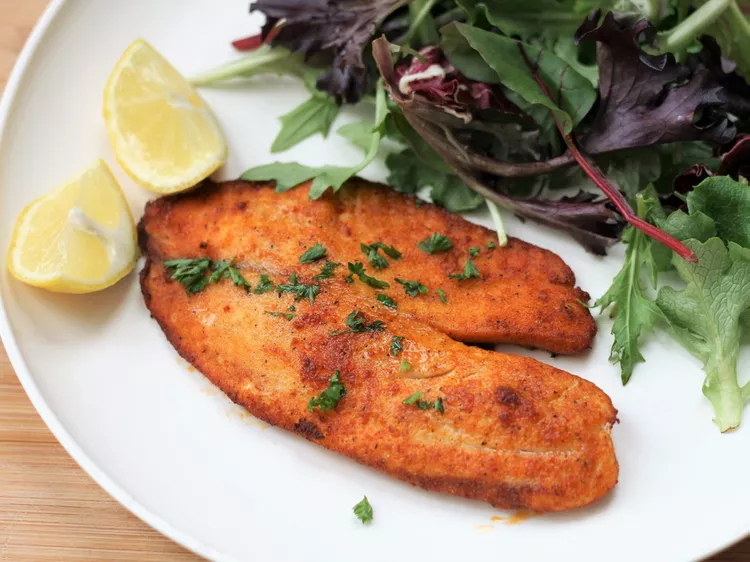

Air Fryer Tilapia

Tilapia cooked in air fryer ready in minutes
Tilapia cooked with an air fryer is quick and healthy!
Crusted in parmesan cheese it comes out wonderfully moist an flavorful. Serve with
rice pilaf or roasted veggies.
Ingredients
- 1/2 cup freshly grated parmesan cheese
- 1 1/2 teaspoons paprika
- 1 teaspoon garlic powder
- 1/2 teaspoon of salt
- 1/2 teaspooon freshly ground black pepper
- 4 (6 ounce) tilapia fillets, thawed if frozon
- Cooking spray
- 1 tablespoon minced fresh parsely (optional)
- 4 lemon wedges (optional)
Directions
- Prehead air fryer to 400 degrees F (200 degrees C).
- Combine parmesan cheese, paprika, garlic powder, salt, and pepper in bowl.
- Pat tilapia filets dry with paper towels. Spritz both sides with cooking spray,
then press both sides of the filets into the Parmesan mixture. Shake off any
excess, then spray again with cooking spray. Place in the basket of the air fryer.
- Cook until the fish flakes easily with a fork, 6 to 8 minutes. You may need to
cook the fish in 2 batches, depending on the size of your air fryer.
- Sprinkle with parsley and serve with lemon wedges.